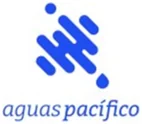
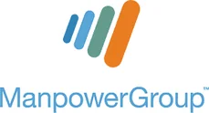
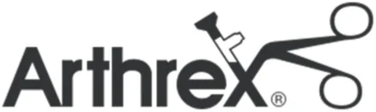
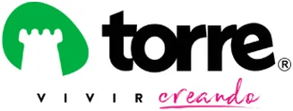
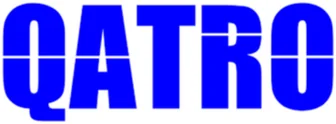
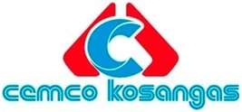

Especialistas en migración de sistemas de remuneraciones en Chile
No somos una consultora de tecnología. Somos gente de remuneraciones.
Sabemos lo que es cerrar un mes con un descuadre a las once de la noche. Por eso implementamos como si el proceso siguiente lo tuviéramos que procesar nosotros.
Especialistas en la parte que nadie quiere revisar.
Pro-City acompaña a empresas chilenas en la migración y operación de sus sistemas de gestión de personas y remuneraciones. Trabajamos con BUK, Talana y Rex+, y llevamos proyectos desde el levantamiento de estructura hasta que el equipo del cliente procesa por su cuenta.
Nuestra diferencia está en la capa de control: los históricos, el paralelo y la cuadratura contra lo declarado. Es la parte más ingrata de una implementación y es exactamente donde ponemos nuestro mejor equipo, porque es donde se juega si la migración fue un éxito o un problema que dura dos años.
Trabajamos con metodología ágil, hitos definidos y carta Gantt visible. En cada momento sabes qué se hizo, qué falta y quién lo tiene.
Lo que puedes esperar de nosotros
Un solo interlocutor
Un líder de proyecto responsable de principio a fin.
Precio cerrado
Planes con alcance y valor definidos. Sin horas abiertas.
Garantía de cuadratura
No damos el go-live hasta que el paralelo cuadre.
Adopción medida
Test de usabilidad antes y después: la capacitación se evalúa, no se supone.
"Cuando una empresa decide migrar de sistema, casi nadie mide el verdadero costo: la carga de trabajo se duplica sobre el mismo equipo, que además sigue pagando sueldos y no puede detener la operación mientras dura el proyecto. El vendedor del software promete 3 o 4 meses; en la práctica terminan siendo 8, 12, hasta 16.
Algunas empresas desisten a mitad de camino. Otras la sacan adelante a costa de no tener vida esos meses: estrés, licencias médicas, renuncias. Y ese atraso es un gasto invisible: sigues pagando la mensualidad del software mes tras mes mientras no estás en producción.
Por eso vale la pena invertir en una compañía externa que asegure el go-live: Pro-City nació para que los plazos se cumplan y el sistema quede realmente listo para que tu gente lo use, no solo encendido."
Compromiso con el medio ambiente
Elegimos e implementamos soluciones que digitalizan documentos y reducen el uso de papel en las áreas de personas: contratos, anexos, liquidaciones y certificados dejan de imprimirse. Cada carpeta de trabajador que se vuelve digital es papel que no se produce ni se archiva.
Partner de Buk
BUK nos publica en su directorio de partners, en la categoría de administradores e implementadores externos. Con Talana llevamos cinco años de implementaciones en Chile y Perú, incluida la migración de ManpowerGroup. No revendemos licencias de ninguna plataforma: eso lo contratas directo con ellas.
Han confiado en nosotros
Trabajamos con empresas de rubros muy distintos —servicios, retail, salud, medios, industria— y esa diversidad es lo que nos permite adaptar la parametrización a operaciones que no se parecen entre sí.






Lo que dicen nuestros clientes
No transcribimos elogios: acá están los clientes hablando en cámara. Cuatro proyectos, cuatro rubros distintos, todos con implementación y capacitación de Talana.
Compañía con más de 50 años de trayectoria, dedicada a la fabricación de piezas con tornos y centros de mecanizado CNC. Implementación, capacitación y acompañamiento para sacarle el máximo provecho a Talana.
Cuatro meses liderando la transformación digital de una de las marcas industriales más reconocidas del país: implementación del sistema y capacitación de los colaboradores de la compañía.
El mayor proyecto tecnológico de la compañía en 10 años. Buscaban un sistema moderno de personas, remuneraciones y firma digital para optimizar los tiempos de la gestión administrativa de capital humano.
Gestión del cambio e implementación de firma digital. La gerencia de personas y los colaboradores aceleraron los tiempos de entrega y firma de documentos administrativos.
Conversemos antes de que tomes la decisión.
Treinta minutos sin costo para entender tu operación y decirte con franqueza qué camino te conviene.